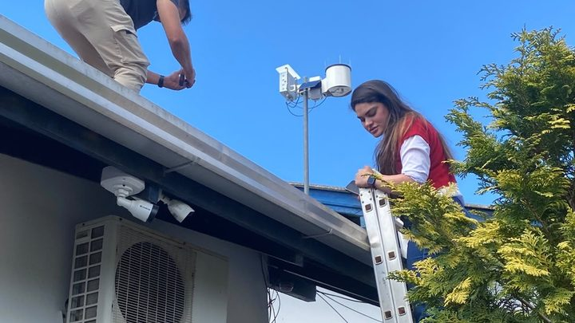

Morro do Encano fecha de novo para detonação de rochas nesta segunda a partir das 8h
O segundo bloqueio de dia inteiro em 17 dias.
A Epagri/Ciram publicou no domingo um aviso meteorológico que começou à 0h05 desta segunda, 21 de setembro, e vai até as 18h de terça, 22. Vale para todas as regiões de Santa Catarina, o nosso litoral incluído, e fala em risco moderado a alto de temporal com chuva intensa, raios, vento acima de 60 km/h e granizo. No mesmo dia, a Prefeitura de Itapema mantém o Morro do Encano interditado a partir das 8h para detonação de rochas.
Em 30 segundos · Modo de Leitura, formato original Santa Informa
Tem aviso de temporal valendo agora.
Quem publicou foi a Epagri/Ciram.
Saiu no domingo, 20 de setembro.
Começou à 0h05 desta segunda.
E termina às 18h de terça.
Vale para todas as regiões do estado.
Ou seja, o nosso litoral está dentro.
O risco é moderado a alto.
Chuva intensa, raios e granizo.
Vento acima de 60 km/h.
A chuva do aviso soma 80 a 100 mm.
Em ponto isolado pode passar de 150 mm.
Hoje o ar fica abafado.
Máxima de 27 °C a 33 °C no estado.
Terça vira tudo.
Máxima cai para 18 °C a 21 °C.
E à noite fica abaixo de 10 °C.
No litoral, rajada de 50 a 70 km/h.
O mar volta a agitar na terça.
A primavera começa terça, às 21h05.
Hoje também fecha o Morro do Encano.
A partir das 8h, para detonar rocha.
Pode ficar fechado o dia inteiro.
Em emergência, Defesa Civil é 199.
Bombeiros, 193.
Santa CatarinaPublicada em Redação Santa Informa

A Epagri/Ciram, centro de meteorologia do Governo de Santa Catarina, publicou no domingo, 20 de setembro, um aviso meteorológico que começou à 0h05 desta segunda, 21, e vai até as 18h de terça, 22. No campo das regiões atingidas o documento diz uma palavra só: todas. Itapema, a Costa Esmeralda e o resto do litoral estão dentro. Para a segunda, o texto prevê risco moderado a alto de temporal com chuva intensa, raios, vento acima de 60 km/h e granizo, além de tempestades severas localizadas. Os maiores acumulados do período ficam entre 80 e 100 mm, e o próprio documento avisa que esse valor pode ser superado, com pontos isolados de 150 mm.
O aviso traz um registro do fim de semana. Entre o sábado, 19, e a manhã de domingo, 20, a chuva acumulada em 36 horas chegou perto de 100 mm entre o Planalto Sul e a Grande Florianópolis, e ficou em torno de 150 mm na região de Santo Amaro. Nenhum desses pontos é daqui, e o documento não publica número por município. O que ele diz é que boa parte do estado entrou nesta segunda com o solo já carregado de água.
O aviso e a agenda da cidade se cruzam num ponto concreto. A Prefeitura de Itapema avisou na sexta que o Morro do Encano fica interditado nesta segunda a partir das 8h para detonação de rochas, e que o bloqueio poderá permanecer ao longo do dia. É o segundo fechamento de dia inteiro nessa estrada em 17 dias. O comunicado da Prefeitura não menciona chuva e não fixa horário de liberação. Quem depende do morro para atravessar até Camboriú tem duas informações para juntar hoje: a via fecha às 8h, e o aviso vale o dia todo.
Hoje o ar fica abafado, com máximas de 27 °C a 33 °C em Santa Catarina. Na terça a frente fria passa, entra massa de ar frio e a máxima despenca para 18 °C a 21 °C, com a mínima à noite, abaixo de 10 °C. No litoral o vento vira para sul e sudoeste, com rajadas de 50 a 70 km/h, e o mar, que teve picos de 2,5 m no domingo, volta a agitar. É na noite de terça, às 21h05, que começa a primavera no Hemisfério Sul.
Esse não é um susto sem aviso prévio. Em 11 de setembro nós publicamos que a chance de o El Niño chegar em intensidade muito forte entre setembro e dezembro tinha subido para 95%. A nota da Epagri/Ciram que trouxe esse número diz, com todas as letras, que um evento dessa magnitude aumenta a probabilidade de temporal e chuva volumosa no estado. O aviso desta segunda chega com a primavera batendo na porta.
O resumo de 30 segundos está no topo e a versão completa é o texto acima. Aqui ficam as três leituras da casa sobre o mesmo assunto.
Clara, a otimista
Aviso com antecedência é coisa boa, e a gente às vezes esquece disso. O documento saiu no domingo, com nome de meteorologista assinando embaixo, hora de início, hora de fim e faixa de milímetros. Quem tem obra aberta, evento marcado ou viagem para fazer teve uma noite inteira para remarcar. Vinte anos atrás a gente descobria o temporal quando ele chegava.
E tem a parte que ninguém pediu, mas que vem junto: depois da frente fria passar, quarta e quinta ficam com sol em Santa Catarina. A primavera começa terça à noite e abre a semana com tempo firme. Para quem cuida de jardim, de horta ou só quer estender roupa no varal, a sequência é boa.
Seu Prudêncio, o criterioso
Merece atenção a coincidência de agenda desta segunda. Uma detonação de rochas fecha uma estrada de morro a partir das 8h, e o mesmo dia está sob aviso de temporal com risco moderado a alto. São duas decisões tomadas por órgãos diferentes, cada uma correta no seu campo, que se encontram no mesmo trecho de estrada. Vale acompanhar se a operação foi mantida, adiada ou encurtada, porque nenhum dos dois comunicados fala do outro.
Outro ponto que merece atenção é a escala do aviso. Dizer "todas as regiões" é honesto do ponto de vista técnico, porque a frente fria atravessa o estado inteiro, mas não ajuda o morador de Meia Praia a decidir nada. A faixa de 80 a 100 mm é para Santa Catarina, não para a nossa bacia. É exatamente essa lacuna que a rede de 38 estações da AMFRI foi comprada para preencher, e o prazo dela termina daqui a nove dias.
Uma sugestão útil: quando a rede estiver completa, publicar o dado de cada estação numa página aberta, atualizada sozinha. Dito isso, o aviso em si está bem feito. Traz início, fim, sistema causador, faixa de acumulado, registro das últimas horas e até a definição técnica do que conta como tempestade severa. É documento de quem quer ser entendido.
Caco, o sarcástico
Hoje Itapema acorda com 33 graus de abafamento e termina a terça de casaco, com a mínima abaixo de dez. Dois dias, quinze graus de diferença. Quem mora aqui já sabe: a mala de viagem é o guarda-roupa inteiro, e você leva tudo mesmo que seja para atravessar o morro.
Por falar em morro, o Encano fecha hoje às 8h para detonar rocha, bem no dia do aviso de temporal. É a rota alternativa da BR-101 tirando folga justamente quando a BR-101 costuma precisar dela. Nunca uma alternativa foi tão alternativa.
Agora sem ironia: se der vento de 60 por hora, saia de baixo de árvore e de estrutura solta, e não encoste em poste caído. Defesa Civil é 199 e Bombeiros é 193. Os dois números estão no rodapé do site da Prefeitura, e hoje é um bom dia para já deixar salvo.
Fontes: o horário de início e fim, as regiões atingidas, o grau de risco, a faixa de 80 a 100 mm, os pontos de 150 mm, a velocidade do vento, o sistema causador e o registro de chuva do fim de semana saíram do aviso meteorológico "Segunda e terça-feira com chuva intensa e risco de tempestade severa", publicado pela Epagri/Ciram em 20 de setembro de 2026 e assinado pela meteorologista Laura Rodrigues, que lemos na íntegra na página de avisos meteorológicos do órgão. As temperaturas de segunda, terça, quarta e quinta, as rajadas do litoral e o horário de início da primavera saíram da Previsão 5 dias da mesma data. Os picos de 2,5 m e o retorno da agitação marítima a partir de terça estão no aviso marítimo de 20 de setembro. A interdição do Morro do Encano está no comunicado da Prefeitura de Itapema de 18 de setembro, e os detalhes do bloqueio anterior estão na nossa matéria do mesmo dia. Os telefones 199 e 193 foram conferidos no rodapé do site da Prefeitura de Itapema nesta segunda-feira. A probabilidade de El Niño muito forte e o prazo da rede de 38 estações da AMFRI estão nas nossas matérias de 11 de setembro e 12 de setembro. O site da Defesa Civil de Santa Catarina não respondeu às nossas tentativas de leitura na manhã desta segunda, e por isso nenhum dado novo dele entrou nesta matéria.
O segundo bloqueio de dia inteiro em 17 dias.
E a rede de 38 estações que mede a chuva aqui tem prazo até o fim de setembro.

Porto Belo · ClimaSó 10 dos 38 pontos da AMFRI foram anunciados cidade por cidade.